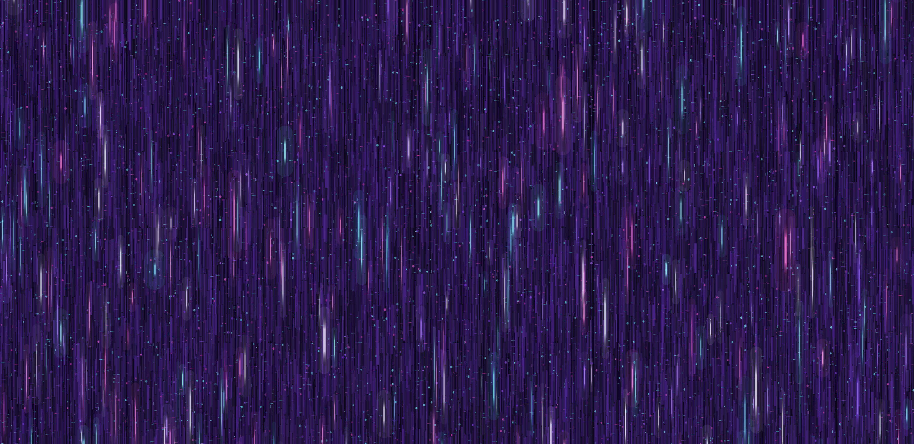

March 2026Neural Networks: From Assignment to Art
How I turned my ES98E neural networks assignment into generative art using D3 and JavaScript, and why making art from technical concepts helps me understand them
This term I took ES98E Scientific Machine Learning at Warwick and one of the assignments that stuck with me most was the one on neural networks. It covered non-linear regression, the bias-variance tradeoff and how neural networks compare to Gaussian processes when you're trying to fit models to limited data. We worked with a water molecule dataset and the whole point was to understand what happens under the hood when a network learns, how it can overfit when you give it too much freedom and how it can underfit when you don't give it enough.
The assignment pushed me to think about neural networks not just as tools you import and call but as actual mathematical structures with real behaviour. You change the number of hidden units or the activation function and the whole shape of the prediction shifts. You train on a small dataset and suddenly you're face to face with the bias-variance tradeoff in a way that no lecture slide ever really captures. You have to see it break to understand why it matters.
What I found most interesting was the comparison between neural networks and Gaussian processes. They're solving the same problem but they think about uncertainty completely differently. A GP gives you confidence intervals for free because uncertainty is baked into the model. A neural network gives you a single prediction and you have to work much harder to know how confident it is. That difference matters a lot when you're working with real-world scientific data where knowing what you don't know is just as important as knowing what you do.
From code to canvas
I process things through making. It's how ideas actually land for me. So after spending weeks staring at network architectures and weight matrices and loss curves I wanted to take everything I'd been learning and turn it into something visual, something that captures what it actually feels like to watch a neural network fire.
I built two pieces using D3 and JavaScript. The first is an animated full-screen generative artwork where hundreds of vertical fibers act as neural pathways and bright signals pulse downward through them like data moving through layers of a network. Some signals branch sideways to neighbouring strands, forming connections the way neurons form synapses. The colour palette is deep indigo and violet for the network structure with hot magenta, cyan and white-hot pulses for the signals travelling through it. It runs in your browser and you can watch it live, the network never stops firing.
Interactive animation. Signals pulse through neural pathways in real time.
The second piece is a high-resolution still version of the same concept, rendered at 4000 by 5400 pixels. Same deep purple fibers, same bright signal pulses frozen mid-flow, same branching connections and glowing node points. Six layers of painterly marks built on top of each other to create a dense texture where every inch of the canvas is covered. It's the kind of thing you could print large and hang on a wall and the closer you get the more detail you see.

High-resolution still. 4000 x 5400 pixels. Six layers of generative marks.
The idea behind both pieces is simple. A neural network is thousands of tiny connections all firing at once and the intelligence comes from the pattern, not from any single connection on its own. I wanted to make something where you could feel that density, where the image itself is built the same way a network works: lots of small simple marks that together create something complex and alive.
Why this matters to me
I'm a data engineer and I spend my days building pipelines and infrastructure. Learning about neural networks from a scientific machine learning perspective changed how I think about what I build because it forced me to reckon with the fact that these systems are not magic, they're maths, and the maths has limitations. The bias-variance tradeoff isn't just an exam question, it's a real thing that affects real predictions that affect real people.
Making art from the concepts I study is my way of making sure I actually understand them. If I can't turn an idea into something visual then I probably don't understand it well enough yet. These two pieces are my way of saying I get it, or at least I'm starting to, and I wanted to share that process because I think there's something valuable in letting technical learning breathe and take a different shape.